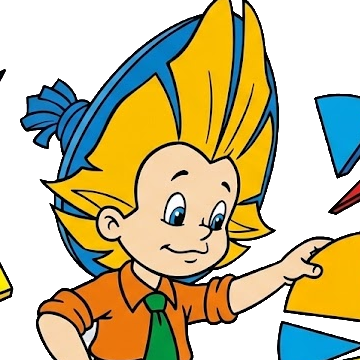

🎓 Oʻqituvchi rejimi yoqilgan. Barcha toʻgʻri javoblar va izohlar ochiq koʻrinmoqda — oʻquvchilarga proyektorda koʻrsatishdan oldin oʻchirishni unutmang.
Kasrlar.
Butunni teng boʻlaklarga boʻlishni, kasrlarni oʻqish, taqqoslash, qisqartirish, qoʻshish va ayirishni
bosqichma-bosqich oʻrganamiz. Har bir mavzudan keyin — qiziqarli savol,
darhol javob va tushuntirish.
Bilmasvoy“Men ham kasrlarni bilmayman — keling, birga oʻrganamiz!”
1-boʻlim
Kasr nima? Nima uchun u kerak boʻlib qoldi?
Butun sonlar hamma narsani ifodalay olmaydi. Yarim olma, chorak soat, uchdan bir stakan — bularni qanday yozamiz?
Bu boʻlimda kasr tushunchasini eng boshidan, bosqichma-bosqich oʻrganamiz.
Boʻlim rejasi:1.1 Hayotda kasrlar · 1.2 Butun nima · 1.3 Kasrning tuzilishi ·
1.4 Teng boʻlaklar sharti · 1.5 Turlicha tasvirlash · 1.6 Kasr va boʻlish ·
1.7 Boʻlak kattaligi · 1.8 Maxsus holatlar
📚 Hikoya

Bilmasvoyning tugʻilgan kuni. Stolda bitta tort turibdi, mehmon esa toʻrtta.
“Har birimizga bittadan tort yoʻq-ku!” — deydi doʻsti. Bilmasvoy pichoqni oladi va tortni
4 ta teng boʻlakka boʻladi. Endi har kimga bitta boʻlak tegadi.
Ana shu boʻlakning nomi bor: 1/4 — “toʻrtdan bir”.
💡 Demak, kasr — bu butunni teng boʻlaklarga boʻlganda paydo boʻladigan son.
📐 Ilmiy taʼrif
Kasr — butunning teng boʻlaklaridan birini yoki bir nechtasini ifodalovchi son.
U a/b koʻrinishida yoziladi, bunda b ≠ 0.
a — surat (butundan nechta boʻlak olindi), b — maxraj (butun nechta teng boʻlakka boʻlindi).
🍕 Sodda tilda
Pastdagi son — pitsani nechaga kesganingiz.
Yuqoridagi son — siz nechtasini olganingiz.
Pitsa 8 ga kesildi, siz 3 tasini oldingiz → 3/8.
1.1 Kasrlar bizni har kuni oʻrab turadi
Kasr — faqat darslikdagi mavzu emas. Siz uni har kuni, hatto sezmagan holda ishlatasiz:
🕒Soat
“Chorak kam olti” — bu 1/4 soat, yaʼni 15 daqiqa. “Yarim kecha” — kunning 1/2 si.
🍰Oshxona
Retseptlarda: 1/2 stakan shakar, 3/4 choy qoshiq tuz. Kasrsiz non yopib boʻlmaydi!
⚽Sport
Futbol oʻyini 2 ta yarim (taym) dan iborat. Basketbolda esa 4 ta chorak bor.
🎵Musiqa
Notalar butun, yarim, chorak va sakkizdan bir deb ataladi. Musiqa — bu tovushdagi kasrlar.
💰Chegirma
“50% chegirma” — narxning 1/2 si. “25%” — 1/4 qismi. Foiz ham aslida kasr.
📏Oʻlchov
Yarim metr, chorak kilogramm, yarim litr — doʻkonda kasrsiz savdo qilib boʻlmaydi.
🏺 Bilasizmi?
Kasrlarni birinchi boʻlib qadimgi Misrliklar 4000 yil oldin ishlatishgan. Ular deyarli faqat
surati 1 boʻlgan kasrlarni (1/2, 1/3, 1/4 …) tan olishgan va 3/4 ni 1/2 + 1/4 koʻrinishida yozishgan!
Bizning hozirgi kasr yozuvimizni esa al-Xorazmiy va boshqa musulmon olimlari asarlari orqali Yevropa oʻrgangan.
1.2 Avval “butun” nima ekanini bilib olaylik
Kasr haqida gapirishdan oldin nimani boʻlayotganimizni aniq bilishimiz kerak. Ana shu boʻlinayotgan
narsa butun deb ataladi. Butun har xil koʻrinishda boʻlishi mumkin:
1-tur
Bitta predmet
Bitta tort, bitta olma, bitta qogʻoz varaq. Uni kesib, boʻlaklarga ajratamiz.
2-tur
Predmetlar toʻplami
🍎🍎🍎🍎🍎🍎
6 ta olma ham bitta butun boʻla oladi. Unda 1 ta olma — butunning 1/6 qismi.
3-tur
Oʻlchov birligi
1 soat, 1 metr, 1 litr, 1 kilogramm. Bularni ham boʻlaklarga ajratish mumkin.
Butunni teng boʻlaklarga ajratsak — boʻlak hosil boʻladi. Kasr esa shu boʻlaklarni
son bilan yozishga yordam beradi. Boshqacha aytganda:
BUTUN➜TENG BOʻLAKLAR➜KASR
1.3 Kasrning tuzilishi
38
SURAT — nechta boʻlak olindi (3 ta)
KASR CHIZIGʻI — “boʻlish” belgisi (3 : 8)
MAXRAJ — butun nechaga boʻlindi (8 ga)
1.4 Eng muhim shart
Boʻlaklar TENG boʻlishi kerak!
✅ Toʻgʻri Toʻrtta teng boʻlak. Bittasi = 1/4
❌ Notoʻgʻri Boʻlaklar har xil. Buni 1/4 deb boʻlmaydi!
1.5 Bitta kasrning toʻrtta “qiyofasi”
Bir xil kasrni butunlay boshqacha rasm bilan koʻrsatish mumkin. Rasm oʻzgaradi, lekin
maʼnosi oʻzgarmaydi: “butun 4 ta teng boʻlakka boʻlindi, shundan 3 tasi olindi”.
Quyida 3/4 kasrining toʻrtta koʻrinishi berilgan — har birida butun nima ekaniga
eʼtibor bering, chunki asosiy farq shunda.
1
Doira modeli
Butun — butun doira. Boʻlak — bitta sektor (“tilim”).
Doira yopiq shakl boʻlgani uchun butunning qayerda tugashi darrov koʻrinadi. Shuning
uchun kasr bilan tanishishda eng qulay model shu.
Oʻqilishi: 4 ta tilimdan 3 tasi boʻyalgan → 3/4
🍕 Hayotda: tort, pitsa, soat siferblati
2
Lenta (uzunlik) modeli
Butun — lentaning butun uzunligi. Boʻlak — bitta katakcha.
Lentalarni bir-birining ustiga qoʻyib solishtirish oson. Shuning uchun bu model
kasrlarni taqqoslash, qoʻshish va ayirishda eng koʻp ishlatiladi.
Oʻqilishi: 4 ta katakdan 3 tasi toʻlgan → 3/4
📏 Hayotda: shokolad plitkasi, chizgʻich, yoʻl uzunligi
3
Toʻplam (miqdor) modeli
🍬🍬🍬🍬
Butun — 4 ta konfetdan iborat guruh. Boʻlak — 1 ta konfet.
Bu yerda hech narsa kesilmaydi! Butun — predmetlar guruhi, kasr esa shu guruhning
qanchasi haqida gapiradi. Aynan shu model keyinchalik “sonning kasrini topish”ga olib boradi.
Oʻqilishi: 4 ta konfetdan 3 tasi olindi → 3/4
🍬 Hayotda: sinfdagi oʻquvchilar, savatdagi olmalar, pul
4
Son oʻqi modeli
Butun — 0 dan 1 gacha boʻlgan masofa. Boʻlak — shu masofaning 1/4 qismi.
Eng muhim model: u kasr ham oddiy son ekanini koʻrsatadi. Kasrni 1, 2, 3 kabi
son oʻqiga qoʻyish mumkin — u shunchaki butun sonlar orasida turadi.
Oʻqilishi: 0 dan 3 ta qadam tashladik, jami 4 ta qadam bor → 3/4
📐 Hayotda: termometr, chizgʻich, tarozi shkalasi
🔑 Asosiy fikr: toʻrtala rasm ham bitta narsani aytmoqda — 3/4. Kasrni tushunish uchun
har safar oʻzingizga ikkita savol bering:
1) Bu yerda butun nima?2) U nechta teng boʻlakka boʻlingan?
1.6 Kasr chizigʻi — bu boʻlish belgisi
➗ Kasr = boʻlish
Kasr chizigʻi aslida “:” belgisining oʻzi. Shuning uchun:
3/4=3 : 4
3 ta nonni 4 bolaga teng boʻlsak, har biriga 3/4 nondan tegadi. Butun sonlarda bunday
boʻlishni bajarib boʻlmaydi — kasrlar aynan shuning uchun kerak boʻlgan.
Maxraj hech qachon 0 boʻlmaydi
Maxraj — butun nechaga boʻlinganini bildiradi. “Nolga boʻlish” esa maʼnoga ega emas:
tortni 0 ta boʻlakka boʻlib boʻlmaydi.
a/b → b ≠ 0
Diqqat: surat 0 boʻlishi mumkin (0/5 = 0), lekin maxraj — hech qachon.
1.7 Maxraj qancha katta boʻlsa, boʻlak shuncha kichik
Maxraj katta = boʻlak kichik
Bu qoida bolalarga koʻpincha teskari tuyuladi: “8 soni 2 dan katta-ku, unda 1/8 ham 1/2 dan katta emasmi?”
Yoʻq! Butun oʻzgarmaydi, faqat u koʻproq kishiga boʻlinadi — demak har kimga kamroq tegadi.
1/2 > 1/4 > 1/8
1/22 kishiga boʻlindi — katta boʻlak
>
1/44 kishiga boʻlindi — oʻrtacha
>
1/88 kishiga boʻlindi — kichik boʻlak
1.8 Uchta maxsus holat
4/4 = 1
Surat va maxraj teng boʻlsa — butunning hammasi olingan, yaʼni 1 butun.
0/4 = 0
Surat 0 boʻlsa — hech qanday boʻlak olinmagan, yaʼni hech nima.
5/1 = 5
Maxraj 1 boʻlsa — butun umuman boʻlinmagan. Demak har qanday butun son ham kasr koʻrinishida yozilishi mumkin.
🧪 Laboratoriya: kasrni oʻzingiz yasang
Tugmalarni bosib surat va maxrajni oʻzgartiring — rasm, oʻqilishi va qiymati darhol yangilanadi.
Yozilishi3/4
Oʻqilishitoʻrtdan uch
Turitoʻgʻri kasr
Oʻnli qiymati0,75
📌 1-boʻlim xulosasi
Butun — boʻlinayotgan narsa (predmet, toʻplam yoki oʻlchov).
Kasr — butunning teng boʻlaklarini ifodalovchi son.
Surat (tepada) — nechta boʻlak olindi. Maxraj (pastda) — butun nechaga boʻlindi.
Boʻlaklar albatta teng boʻlishi kerak.
Kasr chizigʻi — boʻlish belgisi: 3/4 = 3 : 4. Maxraj hech qachon 0 boʻlmaydi.
Maxraj katta boʻlsa, boʻlak kichik boʻladi: 1/2 > 1/4 > 1/8.
✏️ Oʻzimizni sinab koʻramiz (sodda misollar)
Rasmda nechta boʻlak boʻyalgan? Bu qaysi kasr?
Jami 4 ta boʻlak (maxraj = 4), boʻyalgani 1 ta (surat = 1) → 1/4.
🍫 Shokolad 5 ta teng boʻlakka boʻlindi. Anvar 2 tasini yedi. U shokoladning qanchasini yedi?
Maxraj — jami boʻlaklar soni (5). Surat — yeyilgan boʻlaklar soni (2). Demak 2/5.
Kasrning pastki soni nima deb ataladi?
Pastdagi son — maxraj, u butun nechta teng boʻlakka boʻlinganini koʻrsatadi.
🍕 Bitta pitsa 2 kishiga, xuddi shunday ikkinchi pitsa 8 kishiga boʻlindi. Kimning boʻlagi kattaroq?
Odam qancha koʻp boʻlsa, boʻlak shuncha kichik. Shuning uchun 1/2 > 1/8.
2-boʻlim
Kasrni qanday oʻqiymiz va yozamiz?
Oʻzbek tilida avval maxraj, keyin surat aytiladi: “beshdan ikki”.
Kasr qanday oʻqiladi
MAXRAJ dan SURAT
Masalan: 3/7 → “yettidan uch”. Avval pastdagi son, keyin yuqoridagi son.
Eng koʻp uchraydigan kasrlar va ularning oʻqilishi
Rasmi
Yozilishi
Oʻqilishi
1/2
ikkidan bir
1/3
uchdan bir
1/4
toʻrtdan bir
3/4
toʻrtdan uch
2/5
beshdan ikki
5/8
sakkizdan besh
“Yettidan toʻrt” kasri qanday yoziladi?
“Yettidan” — maxraj 7 (pastda), “toʻrt” — surat 4 (tepada). Demak 4/7.
🕐 Soat 15 daqiqa yurdi. Bu bir soatning qanchasi?
Bir soat = 60 daqiqa. 60 ni 4 ga boʻlsak 15 chiqadi → 15 daqiqa = 1/4 soat, yaʼni “chorak soat”.
3-boʻlim
Kasrlarni taqqoslash: qaysi biri katta?
Ikkita oddiy qoida va bitta ajablanarli hodisa.
Maxrajlar teng boʻlsa
Maxrajlar bir xil boʻlsa, surati katta boʻlgan kasr katta.
2/7
<
5/7
Boʻlaklar bir xil kattalikda — kimda koʻp boʻlsa, oʻsha yutadi.
Suratlar teng boʻlsa 🤯
Suratlar bir xil boʻlsa, maxraji kichik boʻlgan kasr katta!
1/2
>
1/8
Pitsani 2 kishiga boʻlsangiz — katta boʻlak; 8 kishiga boʻlsangiz — kichkina boʻlak. Odam qancha koʻp boʻlsa, ulush shuncha kichik!
📏 Son oʻqida kasrlar
0 bilan 1 orasidagi masofa — bu bizning “butun”imiz. Kasr shu masofaning qayerida turishini koʻrsatadi.
⚖️ Laboratoriya: taqqoslash tarozisi
Ikkita kasrni tanlang — tarozi qaysi biri ogʻirligini oʻzi aytib beradi.
?
🍫 Bir xil ikkita shokolad bor. Birinchisi 3 ta boʻlakka, ikkinchisi 6 ta boʻlakka boʻlingan. Qaysi boʻlak kattaroq?
Maxraj qancha katta boʻlsa, boʻlak shuncha kichik: 1/3 > 1/6. Shokoladni kam kishiga boʻlish foydaliroq 😄
Qaysi qatorda kasrlar oʻsish tartibida (kichikdan kattaga) joylashgan?
Suratlar teng boʻlgani uchun maxraj kattasi eng kichik kasr: 1/8 < 1/4 < 1/2.
4-boʻlim
Teng kasrlar va qisqartirish
Bitta miqdorni turli kasrlar bilan yozish mumkin. 1/2 = 2/4 = 3/6 — bularning hammasi “yarim”!
1/2
=
2/4
=
3/6
=
4/8
Kasrning asosiy xossasi
Surat va maxrajni bir xil songa koʻpaytirsak yoki bir xil songa boʻlsak, kasrning qiymati oʻzgarmaydi.
1/2×3 ↓↑3/6
Xuddi pitsani mayda kesgandek: boʻlaklar koʻpaydi, lekin ovqat miqdori oʻsha-oʻsha.
✂️ Kasrni qisqartirish
Qisqartirish — surat va maxrajni umumiy boʻluvchiga boʻlish. Maqsad: kasrni eng sodda koʻrinishga keltirish.
12/18: 62/3
12 va 18 ning eng katta umumiy boʻluvchisi (EKUB) = 6. Ikkalasini 6 ga boʻldik.
✂️ Laboratoriya: qisqartirish mashinasi
Istalgan kasrni kiriting — mashina uni bosqichma-bosqich qisqartirib beradi.
Qaysi kasr 1/3 ga teng?
2/6 ni 2 ga qisqartiramiz: 2 : 2 = 1, 6 : 2 = 3 → 1/3. Demak 2/6 va 1/3 — teng kasrlar.
16/24 kasrini eng sodda koʻrinishga keltiring.
16 va 24 ning EKUB i = 8. 16:8 = 2, 24:8 = 3 → 2/3. (8/12 va 4/6 ham teng, lekin ular hali qisqaradi.)
5-boʻlim
Toʻgʻri kasr, notoʻgʻri kasr va aralash son
Agar bitta emas, ikkita pitsa boʻlsa-chi?
Toʻgʻri kasr
3/4 — surat maxrajdan kichik. Qiymati har doim 1 dan kichik.
Notoʻgʻri kasr
7/4 — surat maxrajdan katta. Bitta butun toʻldi va yana ortdi.
Aralash son
134
1 3/4 — bitta butun va yana 3/4. Bu 7/4 ning boshqacha yozilishi.
➡️ Notoʻgʻri kasrdan aralash songa
Suratni maxrajga boʻlamiz. Boʻlinma — butun qism, qoldiq — yangi surat.
1 7 : 4 = 1, qoldiq 3
2 Butun = 1, surat = 3, maxraj = 4
3 Javob: 1 3/4
⬅️ Aralash sondan notoʻgʻri kasrga
Butunni maxrajga koʻpaytiramiz va suratni qoʻshamiz.
1 2 · 5 = 10
2 10 + 3 = 13
3 2 3/5 = 13/5
🍕 Stolda 9 ta pitsa boʻlagi bor. Har bir butun pitsa 4 ta boʻlakdan iborat. Bu nechta pitsa?
9 : 4 = 2, qoldiq 1. Demak 9/4 = 2 1/4 pitsa.
3 2/7 aralash sonini notoʻgʻri kasrga aylantiring.